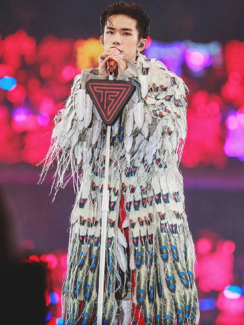
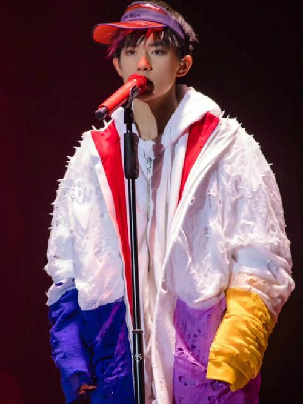
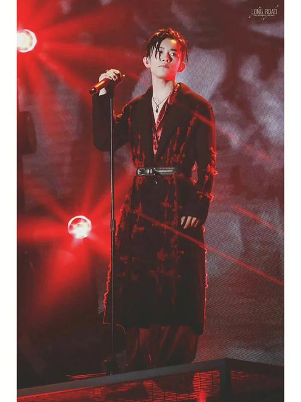
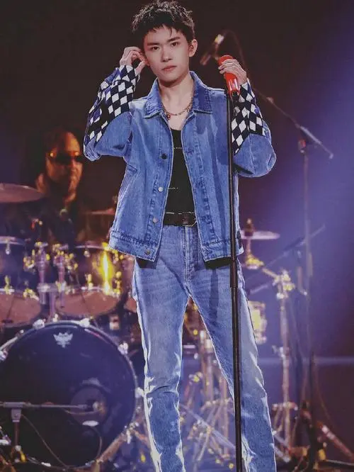
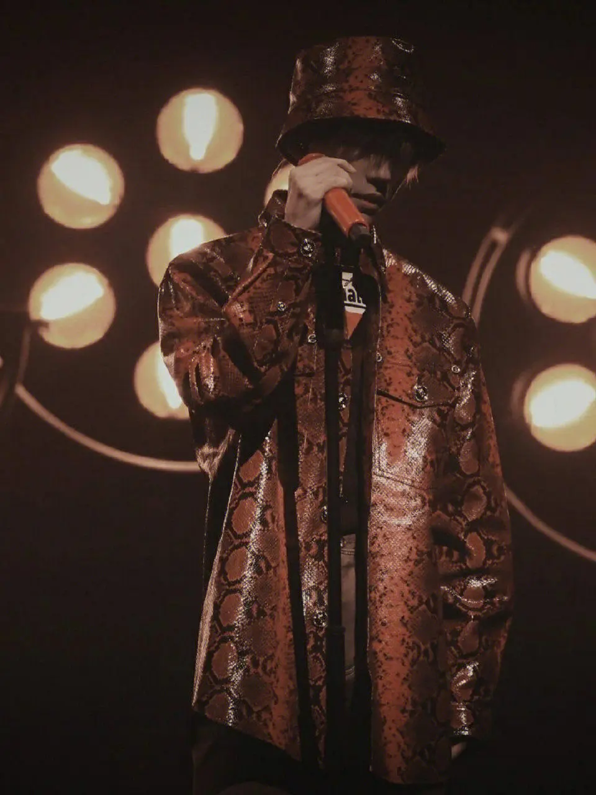
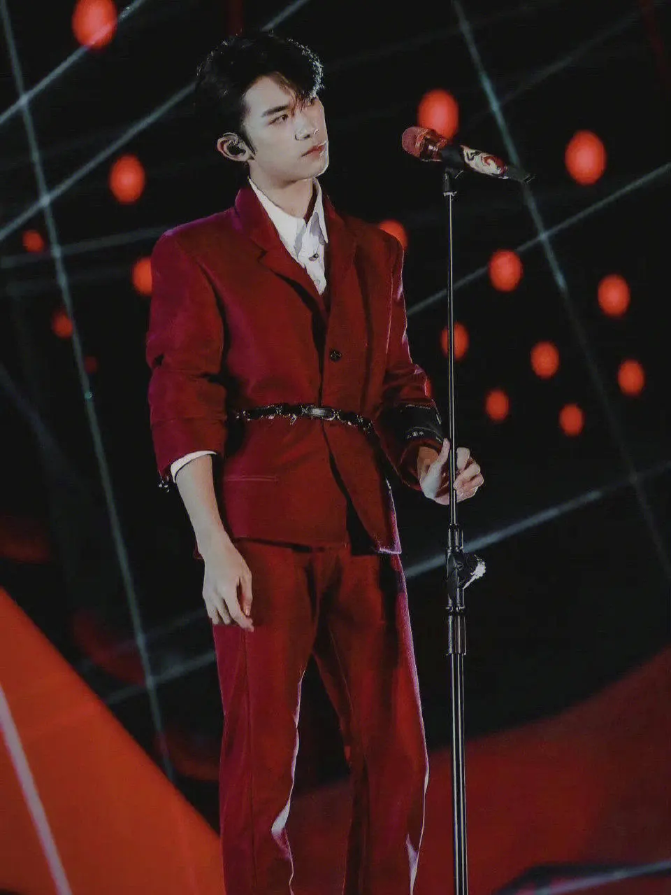

2011年1月26日
，易烊千玺参与中央电视台少儿频道《音乐快递》节目，表演开场舞 [37] 。6月，随组合参与天津卫视模仿秀节目《王者归来》 [38] 。同年，参演电视剧《超装备小子》，饰演祥仔 [32] 。同年底，易烊千玺退出“飞炫少年”组合
2015年2月
随TFBOYS组合参与“北京电视台春节联欢晚会” [61] ，和湖南卫视“在一起喜洋洋”小年夜春晚 [62] 。3月6日，《TF少年GO第三季》回归腾讯视频独家首播，易烊千玺翻唱《昨天的你的现在的未来》和《南部小城》
2020年1月9日，为电影《夺冠》演唱的推广曲《不分昼夜》发布
2月19日，以“广播家族”成员身份参与芒果TV原创声音互动陪伴真人秀《朋友请听好》 [138] ；6月，以“少年探索者”身份加盟综艺节目《少年之名》
2021年2月11日，登中央广播电视总台春节联欢晚会舞台
登中央广播电视总台春节联欢晚会舞台，与张杰共同演唱歌曲《亲戚》 [150] ；2月26日，参加2021年中央广播电视总台元宵晚会，独唱《青春的起点》 [151] ；
2022年1月7日，与刘德华共同演唱的电影《奇迹·笨小孩》
1月9日，凭借《送你一朵小红花》获得了第16届华语青年电影周年度新锐男演员奖 [361] ；1月26日，演唱的《长津湖之水门桥》片尾曲《雪花》上线 [366] ；1月31日，参加《2022年中央广播电视总台春节联欢晚会》
2023年1月22日，主演的电影《满江红》播出
3月7日，出演的先锋电影短片《未知动物》正片上线 [445] ，电影《满江红》北美定档3月17日，中国内地票房已超45亿。 [450] 4月3日，出演智族GQ微电影《在集市上》 [451] 4月12日，豆瓣更新《英雄联盟电竞剧》演职员人员表，主演为易烊千玺。
